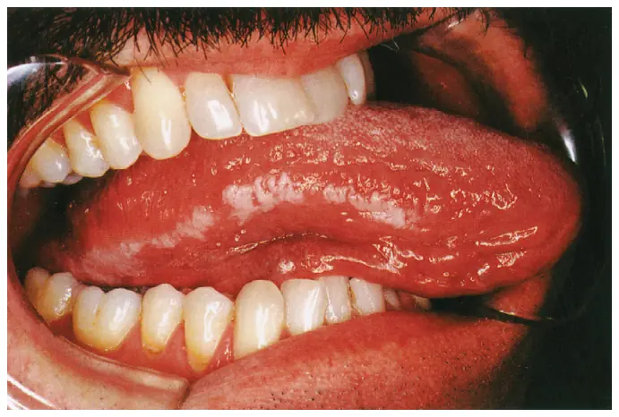
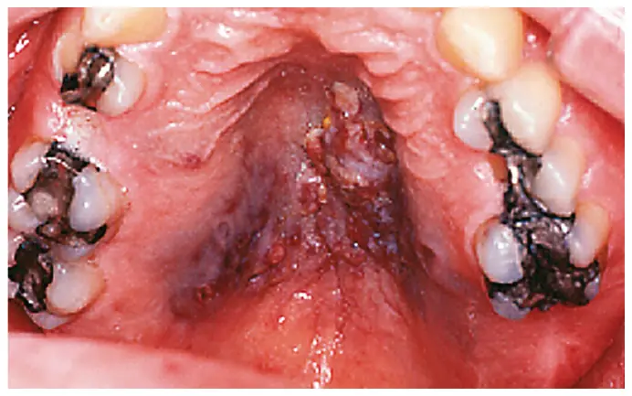

نسخه استخراجشده؛ ترجمه یا تأیید علمی انجام نشده است. وضعیت: captured
مرد ۵۸ سالهای برای دست دندان لق آمده و سه سال است پزشک نرفته. روی کام و زبانش پلاکهای سفیدی است که با گاز پاک میشوند و زیرشان قرمز است. در دو طرف گردن غدد لنفاوی سفت و بیدرد لمس میکنی. به چه فکر میکنی؟

ضایعهی دهانی گاهی نخستین نشانهی HIV است. در بیمار شناختهشده هم ضایعهی تازه ممکن است یعنی درمان جواب نمیدهد یا بیماری پیش رفته است.
لنفادنوپاتی ژنرالیزهی پایدار: نشانهی زودرس HIV در حدود ۷۰٪ افراد. بیش از ۳ ماه، در دو جا یا بیشتر بیرون از کشالهی ران؛ بیشتر گردنی، زیرفکی، پسسری و زیربغل.
درمان NUG و NUP: دبریدمان و شستوشو با کلرهگزیدین ۰٫۱۲٪ یا پوویدونآیوداین ۱۰٪، دهانشویه در خانه، و در موارد شدید یا مقاوم مترونیدازول ۲۵۰ میلیگرم سه بار در روز برای ۷ تا ۱۴ روز همراه داروی ضدقارچ.

نسخهنویسی: داروهای ضدرتروویروسی تقویتشده با ریتوناویر یا کوبیسیستات سطح دیازپام، آلپرازولام و کورتیکواستروئید سیستمیک را بالا میبرند؛ سطح مسکنهای اپیوئیدی، از جمله ترامادول، هم با این داروها یا افاویرنز ممکن است تغییر کند. پتیدین با افاویرنز خطر تشنج دارد و ممنوع است. با تنوفوویر (TDF) خطر آسیب کلیه با NSAID بیشتر است؛ NSAID ممنوع نیست ولی سنجیده و کوتاهمدت بده. آنتیبیوتیکهای رایج دندانپزشکی تداخل مهمی با ART ندارند.